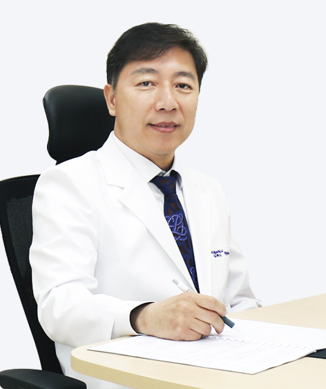

<div class="profile_detail">
	<div class="photo"></div>
	<div class="detail">
		<div class="top">
			<div class="name"><h5>김기림<em>원장</em></h5></div>
			<div class="logo"></div>
		</div>
		
		<div class="con">
			<div class="left"><span>진료과</span></div>
			<div class="right">
				<ul>
					<li>재활의학과</li>
				</ul>
			</div>
		</div>
		<div class="con">
			<div class="left"><span>학력/경력/활동</span></div>
			<div class="right career">
				<ul>
					<li>부산대학교 의과대학 졸업</li>
					<li>부산대학교 의학박사</li>
					<li>동의의료원 재활의학과 과장</li>
					<li>메드윌병원 원장</li>
					<li>아름다운강산병원 원장</li>
					<li>부산의대, 고신의대, 인제의대 외래교수</li>
					<li>국민연금 장애활동지원 평가위원장</li>
					<li>국민건강보험공단 노인요양급여평가위원</li>

				</ul>
			</div>
		</div>

	</div>
</div>